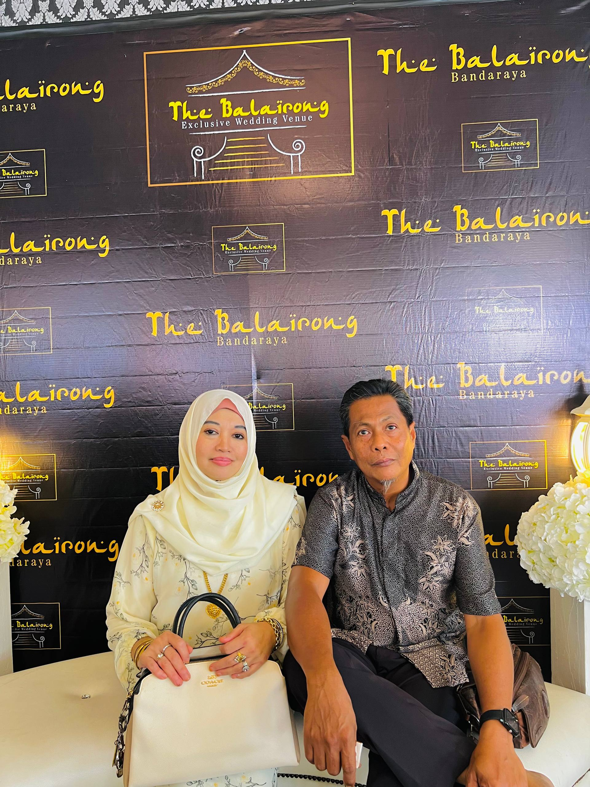
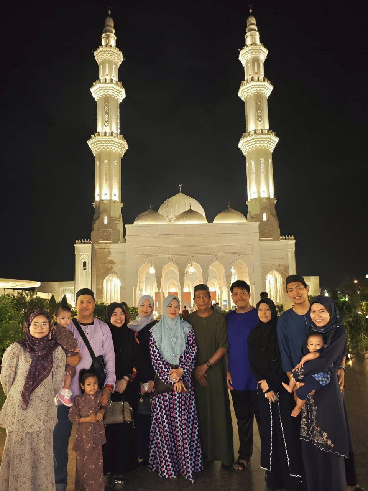

Meet my wonderful family members and our background
Father
Age: 60 years
Occupation: Pensioner, Freelancer
Born: Seremban
Mother
Age: 55 years
Occupation: Housewife
Born: Selangor
First Child
Age: 34 years
Occupation: Rapid KL Officer
Born: Kuala Lumpur
Second Child
Age: 31 years
Occupation: Military
Born: Kuala Lumpur
Third Child
Age: 28 years
Occupation: Freelancer
Born: Selangor
Fourth Child
Age: 26 years
Occupation: Mechatronic Engineer
Born: Selangor
Fifth Child (You are here!)
Age: 20 years
Occupation: Student
Born: Seremban, Negeri Sembilan
Sixth Child
Age: 17 years
Occupation: Student
Born: Selangor
| No. | Name | Relationship | Age | Occupation | Place of Birth | Current Location |
|---|---|---|---|---|---|---|
| 1 | Nor Azman Bin Kemis@Khamis | Father | 60 | Pensioner, Freelancer | Seremban | Pedas, Negeri Sembilan |
| 2 | Nur Hazlina Binti Harun | Mother | 55 | Housewife | Selangor | Pedas, Negeri Sembilan |
| 3 | Nur Aina Syaza Binti Nor Azman | First Child / Sister | 34 | Rapid KL Officer | Kuala Lumpur | Kuala Lumpur |
| 4 | Aiman Faruq Bin Nor Azman | Second Child / Brother | 31 | Military | Kuala Lumpur | Various bases |
| 5 | Nur Aina 'Aqilah Binti Nor Azman | Third Child / Sister | 28 | Freelancer | Selangor | Selangor |
| 6 | Aiman 'Ammar Bin Nor Azman | Fourth Child / Brother | 26 | Mechatronic Engineer | Selangor | Selangor |
| 7 | Nur Khairunnisa 'Afifah Binti Nor Azman | Fifth Child (Self) | 20 | Student | Seremban | Pedas, Negeri Sembilan |
| 8 | Aiman Hadid 'Afi Bin Nor Azman | Sixth Child / Brother | 17 | Student | Selangor | Pedas, Negeri Sembilan |
|

Parents
|

Family Members
|
Our family originates from Negeri Sembilan and Selangor, with a mix of traditional values and modern perspectives. We maintain strong family bonds despite geographical distances between siblings.
Family members are located across Malaysia: Pedas (parents), Kuala Lumpur (oldest sister), Selangor (siblings), and various locations due to military postings (brother). Despite distances, we maintain close connections through technology and regular visits.